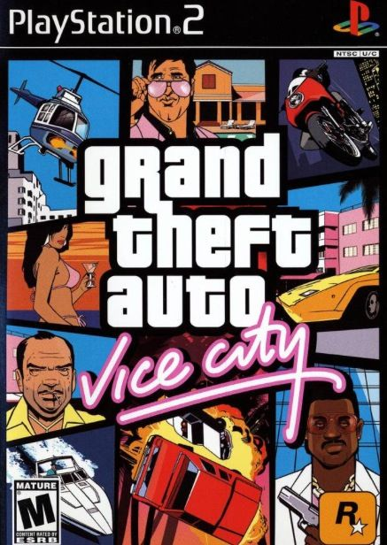

Grand Theft Auto: Vice City es un videojuego de acción y aventura ambientado en una ciudad inspirada en Miami durante los años ochenta. Acompaña a Tommy Vercetti en una historia de crimen, negocios y poder.
VOLVER A LOS JUEGOSDescarga próximamente. Enlace autorizado pendiente de configuración.
Viaja a Vice City, una ciudad llena de luces, playas y peligros. Sigue la historia de Tommy Vercetti mientras construye su propio imperio.
Explora la ciudad, conduce diferentes vehículos, completa misiones y disfruta de una ambientación inspirada en la cultura de los años ochenta.
Esta ficha es informativa. PS2 GAMER STORE solamente ofrecerá archivos cuya distribución esté autorizada por sus respectivos titulares.